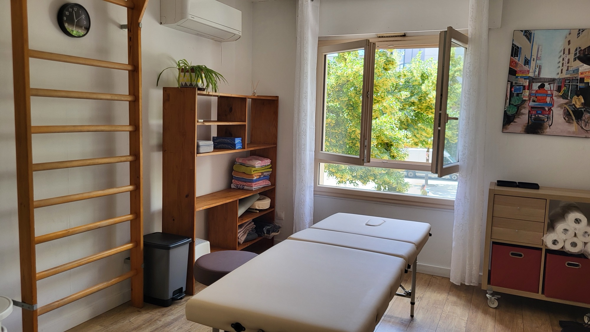

Médecine Traditionnelle Chinoise à Lyon et Saint-Priest
Acupuncture, Tui Na, énergétique chinoise, un accompagnement personnalisé vers un mieux-être durable.

Depuis plusieurs années, j'accompagne les personnes qui désirent améliorer leur bien-être et leur santé grâce à la médecine traditionnelle chinoise (MTC).
Diplômée en MTC depuis 2020, je partage mon temps entre deux cabinets : un à Lyon 7ème au cœur de Gerland, climatisé, et un à Saint-Priest, à Manissieux, au sein d'un cabinet paramédical. Les deux sont des lieux accueillants, propices au soin et à la détente.
La Médecine traditionnelle chinoise peut vous apporter des solutions.
Tensions, fatigue persistante, insomnie, sommeil perturbé, surmenage
Tensions et douleurs corporelles
Déséquilibres émotionnels
Cycles féminins déséquilibrés, douloureux, irréguliers, inconforts de la ménopause
Système immunitaire affaibli, allergies, peau réactive
Envie de prévenir plutôt que guérir, ou d'un teint plus reposé
Mes accompagnements
« Suite à une infection Covid, Sophie m'a aidée à soigner mon anosmie longue en deux séances. Merci encore ! »
Marie-Luce A.« Professionnelle à l'écoute et attentive à mes douleurs. Première rencontre et déjà un bien-être, plus de douleur depuis ce rendez-vous. Un vrai bonheur !! je recommande à 100% »
Mathilde U.« Très bonne prestation, après un mauvais rhume, ressenti efficace merci »
Annie E.Prête à prendre soin de vous ?
Réservez votre séance à Lyon Gerland ou à Saint-Priest et faites le premier pas vers un mieux-être durable.
Prendre rendez-vous